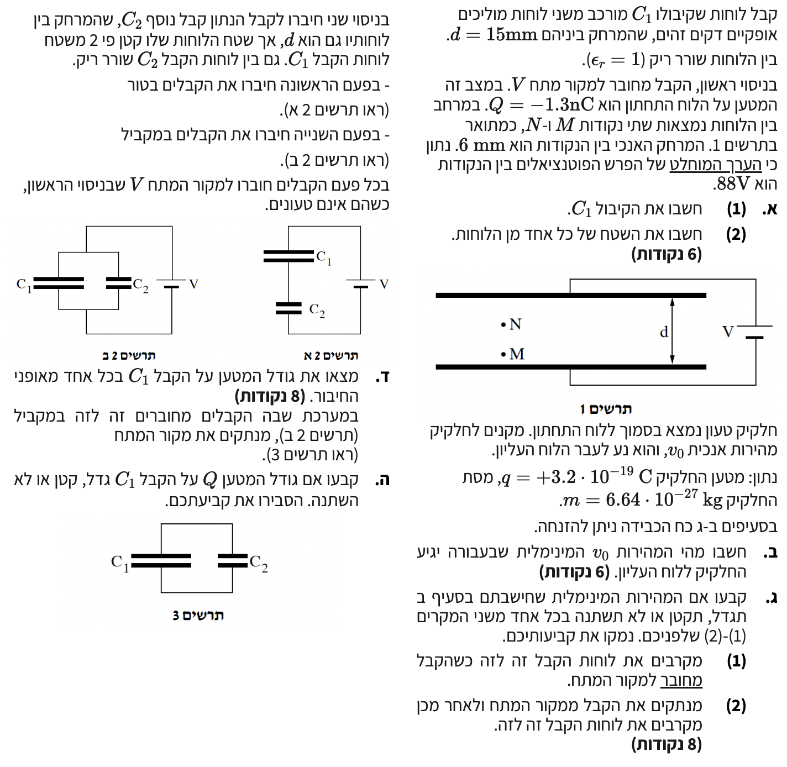

פתרון מוסבר: שדה החשמלי וקבלים
בגרות בפיזיקה - חשמל / 2025 / שאלה 5
פתרון מודרך, מפורט וצעד-אחר-צעד המותאם לתלמידי 5 יחידות לימוד
עודכן:
--- --:--:--
מבט כללי על השאלה
השאלה עוסקת בנושאי ליבה מרכזיים באלקטרוסטטיקה ובקבלים: שדה חשמלי אחיד בין לוחות קבל, תנועת חלקיק טעון בשדה מעכב, שינוי מאפייני הקבל (מרחק ושטח) בתרחישים שונים של חיבור וניתוק ממקור מתח, וכן שקילות קבלים בחיבור טורי ובחיבור מקבילי.
לפתרון נכון, ניעזר בכלים קינמטיים, בדינמיקה של ניוטון, ובחוקי שימור אנרגיה ומטען.

[תמונת השאלה המקורית]
לא נמצאה תמונה בשם question-image.png באותה תיקייה.
מה נתון:
- מרחק בין הלוחות: \( d = 15 \text{ mm} = 0.015 \text{ m} \)
- המקדם הדיאלקטרי של ריק: \( \varepsilon_r = 1 \)
- מטען הלוח התחתון: \( -1.3 \text{ nC} \implies Q = 1.3 \cdot 10^{-9} \text{ C} \)
- מרחק בין הנקודות: \( \Delta y = 6 \text{ mm} = 0.006 \text{ m} \)
- גודל הפרש הפוטנציאלים: \( |\Delta V_{MN}| = 88 \text{ V} \)
- קבוע דיאלקטרי של הריק: \( \varepsilon_0 = 8.85 \cdot 10^{-12} \, \frac{\text{F}}{\text{m}} \)
מה מחפשים:
- (1) את הקיבול של קבל \(C_1\).
- (2) את שטח אחד הלוחות, \(A\).
נוסחאות ועקרונות בשימוש:
\( E = -\frac{\Delta V}{\Delta x} \)
\( E = \frac{V_{AB}}{d} \)
\( C = \frac{Q}{V} \)
\( C = \varepsilon_0\varepsilon_r\frac{A}{d} \)
פתרון צעד-אחר-צעד:
שלב 1: מציאת השדה החשמלי והמתח הכולל בין הלוחות
מכיוון שהשדה החשמלי בין הלוחות הוא שדה אחיד, עוצמתו קבועה בכל נקודה בין הלוחות ושווה ליחס שבין הפרש הפוטנציאלים למרחק המפריד ביניהם:
\[ E = \frac{|\Delta V_{MN}|}{\Delta y} = \frac{88}{0.006} = 14666.67 \, \frac{\text{V}}{\text{m}} \]
נשתמש בשדה שקיבלנו על מנת למצוא את הפרש הפוטנציאלים (המתח) הכולל בין לוחות הקבל המרוחקים זה מזה במרחק \(d\):
\[ V_{AB} = E \cdot d = 14666.67 \cdot 0.015 = 220 \text{ V} \]
שלב 2: חישוב קיבול הקבל (1)
נשתמש בהגדרת הקיבול תוך הצבת המטען והמתח שחישבנו:
\[ C_1 = \frac{Q}{V_{AB}} = \frac{1.3 \cdot 10^{-9}}{220} = 5.909 \cdot 10^{-12} \text{ F} \]
שלב 3: חישוב שטח לוח הקבל (2)
נבודד את השטח \(A\) מנוסחת הקיבול של קבל לוחות:
\[ A = \frac{C_1 \cdot d}{\varepsilon_0 \cdot \varepsilon_r} \]
\[ A = \frac{5.909 \cdot 10^{-12} \cdot 0.015}{8.85 \cdot 10^{-12} \cdot 1} = 0.010015 \text{ m}^2 \]
מסקנות סעיף א':
(1) הקיבול של קבל \(C_1\) הוא: \( 5.91 \cdot 10^{-12} \text{ F} \) (או \( 5.91 \text{ pF} \)).
(2) שטח לוח הקבל הוא: \( 0.0100 \text{ m}^2 \).
טיפ מורה:
שימוש נכון ביחידות מידה הוא קריטי בבגרות! תלמידים רבים שוכחים להמיר מילימטרים (\(\text{mm}\)) למטרים (\(\text{m}\)), מה שגורר שגיאות חמורות של סדרי גודל בקיבול ובשטח. זכרו תמיד לרכז נתונים בצד ולהמירם מיד לשיטת MKS.
מה נתון:
- מטען החלקיק: \( q = +3.2 \cdot 10^{-19} \text{ C} \)
- מסת החלקיק: \( m = 6.64 \cdot 10^{-27} \text{ kg} \)
- מרחק המעבר: \( \Delta y = d = 0.015 \text{ m} \)
- כיוון השדה החשמלי: כלפי מטה (מלוח חיובי לשלילי)
- כוח הכבידה ניתן להזנחה (נתון מפורש)
מה מחפשים:
- את המהירות ההתחלתית המינימלית \(v_0\) הנדרשת כדי שהחלקיק יגיע בדיוק ללוח העליון (\(v = 0\)).
נוסחאות ועקרונות בשימוש:
\( \sum F = ma \)
\( F_E = qE \)
\( v^2 = v_0^2 + 2a(x - x_0) \)
פתרון צעד-אחר-צעד:
שלב 1: שרטוט תרשים כוחות (FBD) וקביעת ציר ייחוס
נבחר ציר \(y\) חיובי כלפי מעלה. מכיוון שהחלקיק חיובי והשדה פונה מטה, יפעל עליו רק כוח חשמלי כלפי מטה (נתון כי ניתן להזניח את השפעת הכבידה).
שלב 2: ניתוח דינמי ומציאת התאוצה של החלקיק
נכתוב את משוואת הכוחות עבור החלקיק בציר \(y\):
\[ \sum F_y = -F_E = ma_y \implies -qE = ma_y \]
נבודד את התאוצה \(a_y\) ונציב את הערכים הידועים:
\[ a_y = -\frac{qE}{m} = -\frac{3.2 \cdot 10^{-19} \cdot 14666.67}{6.64 \cdot 10^{-27}} \approx -7.07 \cdot 10^{11} \, \text{m/s}^2 \]
הערת מורה: תאוצת הגוף \(a\) שלילית מכיוון שכיוון הכוח שקובע אותה הפוך מכיוון הציר שבחרנו (כלפי מעלה). גודל המהירות של הגוף הולך וקטן במהלך תנועתו כלפי מעלה.
שלב 3: חישוב המהירות ההתחלתית באמצעות קינמטיקה
נשתמש בנוסחת קינמטיקה ללא זמן, כאשר נציב מהירות סופית \(v = 0\) ומרחק מעבר \(\Delta y = 0.015 \text{ m}\):
\[ v^2 = v_0^2 + 2a_y \Delta y \]
\[ 0 = v_0^2 + 2(-7.068 \cdot 10^{11})(0.015) \]
\[ v_0^2 = 2.12 \cdot 10^{10} \implies v_0 = \sqrt{2.12 \cdot 10^{10}} = 145617.5 \text{ m/s} \]
מסקנת סעיף ב': המהירות המינימלית הנדרשת כדי שהחלקיק יגיע ללוח העליון היא: \( 1.46 \cdot 10^5 \text{ m/s} \).
טיפ מורה:
גישה חלופית (ומומלצת מאוד!) לפתרון סעיף זה היא באמצעות משפט עבודה-אנרגיה. עבודת השדה החשמלי המעכב שווה לשינוי באנרגיה הקינטית: \(-qV_{AB} = 0 - \frac{1}{2}mv_0^2 \implies v_0 = \sqrt{\frac{2qV_{AB}}{m}} \). דרך זו חוסכת את הצורך בחישוב השדה והתאוצה, ומובילה לתשובה מדויקת ומהירה בשורה אחת!
מה נתון:
- מקטינים את המרחק \(d\) בין הלוחות.
- מסת ומטען החלקיק אינם משתנים.
- מקרה (1): הקבל מחובר למקור המתח.
- מקרה (2): הקבל מנותק ממקור המתח.
מה מחפשים:
- לקבוע ולהסביר האם המהירות \(v_0\) תגדל, תקטן או לא תשתנה בכל אחד משני המקרים.
נוסחאות ועקרונות בשימוש:
\( W_{AB} = qV_{AB} = \Delta E_k \)
\( v_0^2 = \frac{2qV_{AB}}{m} \)
\( C = \varepsilon_0\frac{A}{d} \)
\( C = \frac{Q}{V} \)
פתרון וניתוח:
מקרה 1: הקבל מחובר למקור המתח
כאשר הקבל נותר מחובר למקור, המתח בין לוחותיו \(V_{AB}\) נותר קבוע ושווה למתח המקור. על פי משפט עבודה-אנרגיה, העבודה הנדרשת כדי לעצור את החלקיק תלויה אך ורק במטען ובמתח שהוא עובר (\(W = qV_{AB}\)). מאחר שהמתח והמטען אינם משתנים, האנרגיה הקינטית ההתחלתית הנדרשת אינה משתנה, ולכן המהירות המינימלית \(v_0\) נותרת קבועה.
במקרה (1): המהירות המינימלית לא תשתנה.
מקרה 2: הקבל מנותק ממקור המתח
כאשר הקבל מנותק ממקור המתח, המטען \(Q\) על לוחותיו נשאר קבוע (מערכת מבודדת). נבחן את השפעת קירוב הלוחות על המתח:
כאשר מקטינים את המרחק \(d\), הקיבול \(C\) של הקבל גדל (לפי הנוסחה \( C = \varepsilon_0\frac{A}{d} \)).
מכיוון שהמטען \(Q\) נשמר, המתח בין הלוחות חייב לקטון לפי הנוסחה:
\[ V_{AB} = \frac{Q}{C} \downarrow \]
מכיוון שהמתח \(V_{AB}\) קטן, גם האנרגיה הנדרשת לעצירת החלקיק (\(qV_{AB}\)) קטנה, ולכן המהירות ההתחלתית המינימלית הדרושה קטנה בהתאמה.
במקרה (2): המהירות המינימלית תקטן.
טיפ מורה:
תמיד מומלץ לגשת לשאלות מהסוג הזה דרך שיקולי אנרגיה ועבודה ולא דרך תאוצות וכוחות. ניתוח באמצעות כוחות ותאוצות מורכב יותר ומגדיל את הסיכוי לטעות, בעוד שמשפט עבודה-אנרגיה מוביל ישירות לתשובה פשוטה ואלגנטית!
מה נתון:
- קיבול הקבל הראשון: \( C_1 = 5.909 \text{ pF} \)
- לקבל החדש \(C_2\) מרחק לוחות זהה \(d\), אך שטח קטן פי 2: \( A_2 = \frac{A_1}{2} \)
- מתח המקור: \( V = 220 \text{ V} \)
מה מחפשים:
- את גודל המטען על הקבל \(C_1\) בשני חיבורים: טורי (תרשים 2 א') ומקבילי (תרשים 2 ב').
נוסחאות ועקרונות בשימוש:
\( C = \varepsilon_0\frac{A}{d} \)
\( \frac{1}{C_T} = \sum_i \frac{1}{C_i} \)
\( C_T = \sum_i C_i \)
\( C = \frac{Q}{V} \)
פתרון צעד-אחר-צעד:
שלב 1: מציאת יחס הקיבולים
על פי הגדרת קבל לוחות, הקיבול נמצא ביחס ישר לשטח הלוח. מכיוון שמרחק הלוחות בשני הקבלים זהה ושטח לוחותיו של \(C_2\) קטן פי 2, קיבולו קטן פי 2 מקיבול הקבל \(C_1\):
\[ C_2 = \frac{1}{2}C_1 = 2.955 \text{ pF} \]
שלב 2: חישוב המטען בחיבור טורי (תרשים 2 א')
בחיבור טורי, נמצא תחילה את הקיבול השקול של שני הקבלים:
\[ \frac{1}{C_T} = \frac{1}{C_1} + \frac{1}{C_2} = \frac{1}{C_1} + \frac{2}{C_1} = \frac{3}{C_1} \implies C_T = \frac{C_1}{3} \]
\[ C_T = \frac{5.909 \cdot 10^{-12}}{3} = 1.969 \cdot 10^{-12} \text{ F} \]
בחיבור טורי המטען על כל אחד מהקבלים שווה למטען השקול המיוצר על ידי מקור המתח:
\[ Q_1 = Q_{total} = C_T \cdot V = (1.969 \cdot 10^{-12}) \cdot 220 = 4.333 \cdot 10^{-10} \text{ C} \]
שלב 3: חישוב המטען בחיבור מקבילי (תרשים 2 ב')
בחיבור מקבילי, המתח על כל אחד מהקבלים שווה למתח המקור. לכן, המתח על \(C_1\) הוא בדיוק \(V = 220\text{ V}\):
\[ Q_1 = C_1 \cdot V = (5.909 \cdot 10^{-12}) \cdot 220 = 1.30 \cdot 10^{-9} \text{ C} \]
מסקנת סעיף ד':
גודל המטען על \(C_1\) בחיבור טורי הוא: \( 4.33 \cdot 10^{-10} \text{ C} \).
גודל המטען על \(C_1\) בחיבור מקבילי הוא: \( 1.30 \cdot 10^{-9} \text{ C} \).
טיפ מורה:
זכרו את מאפייני החיבורים! בחיבור טורי המטען על הקבלים זהה (\(Q_1 = Q_2 = Q_{total}\)) והמתח מתחלק ביניהם, בעוד בחיבור מקבילי המתח על הקבלים זהה (\(V_1 = V_2 = V_{total}\)) והמטענים מתחלקים.
מה נתון:
- הקבלים טעונים במלואם בחיבור מקבילי למתח \(V\).
- מנתקים את מקור המתח מהמעגל (תרשים 3).
מה מחפשים:
- לקבוע האם גודל המטען \(Q_1\) על הקבל \(C_1\) יגדל, יקטן או לא ישתנה לאחר הניתוק.
נוסחאות ועקרונות בשימוש:
\( Q_{total} = Q_1 + Q_2 \)
\( V_{1} = V_{2} = V_{new} \)
פתרון וניתוח:
לפני ניתוק המקור, המערכת הגיעה לשיווי משקל אלקטרוסטטי מלא, כך שהמתח על שני הקבלים זהה ושווה למתח המקור \(V\).
ברגע ניתוק המקור, המערכת הופכת למערכת סגורה ומבודדת, ולכן סך המטען במעגל (\(Q_{total}\)) חייב להישמר (חוק שימור המטען).
מכיוון שהקבלים נותרים מחוברים זה לזה במקביל, הפוטנציאלים החשמליים שלהם נותרים שווים. היות ואין הפרש פוטנציאלים שיגרום למטענים לזרום מקבל אחד למשנהו, המערכת נותרת במצב שיווי המשקל המקורי שלה.
באופן מתמטי, נראה כי המתח המשותף החדש של המערכת לאחר הניתוק זהה למתח המקורי:
\[ V_{new} = \frac{Q_{total}}{C_{eq}} = \frac{Q_1 + Q_2}{C_1 + C_2} = \frac{C_1 V + C_2 V}{C_1 + C_2} = \frac{V(C_1 + C_2)}{C_1 + C_2} = V \]
מכיוון שהקיבול של \(C_1\) והמתח עליו לא השתנו, גם מטענו החשמלי אינו משתנה.
מסקנת סעיף ה': גודל המטען \(Q\) על קבל \(C_1\) לא ישתנה בעקבות הניתוק.
טיפ מורה:
מטען חשמלי יזרום בין רכיבים מחוברים אך ורק אם קיים ביניהם הפרש פוטנציאלים (מתח). מאחר והקבלים נטענו במקביל מאותו המקור, הם כבר נמצאים באותו הפוטנציאל, ולכן שום מטען לא ינדוד ביניהם לאחר ניתוק המקור.